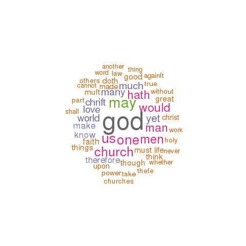

baxter
This page describes a corpus named baxter as created by a tool named the EEBO-TCP Workset Browser.
General statistics
An analysis of the corpus's metadata provides an overview of what and how many things it contains, when things were published, and the sizes of its items:
- Number of items - 140
- Publication date range - 1650 to 1697 (histogram : boxplot)
- Sizes in pages - 1 to 1258 (histogram : boxplot)
- Total number of pages - 33507
- Average number of pages per item - 239
Possible correlations between numeric characteristics of records in the catalog can be illustrated through a matrix of scatter plots. As you would expect, there is almost always a correlation between pages and number of words. Are others exist? For more detail, browse the catalog.
Notes on word usage
By counting and tabulating the words in each item of the corpus, it is possible to measure additional characteristics:
Perusing the list of all words in the corpus (and their frequencies) as well as all unique words can prove to be quite insightful. Are there one or more words in these lists connoting an idea of interest to you, and if so, then to what degree do these words occur in the corpus?
To begin to see how words of your choosing occur in specific items, search the collection.
Through the creation of locally defined "dictionaries" or "lexicons", it is possible to count and tabulate how specific sets of words are used across a corpus. This particular corpus employs three such dictionaries -- sets of: 1) "big" names, 2) "great" ideas, and 3) colors. Their frequencies are listed below:
The distribution of words (histograms and boxplots) and the frequency of words (wordclouds), and how these frequencies "cluster" together can be illustrated:
Items of interest
Based on the information above, the following items (and their associated links) are of possible interest:
- Shortest item (1 p.) - Short instructions for the sick: Especially who by contagion, or otherwise, are deprived of the presence of a faithfull pastor. / By Richard Baxter. (TEI : HTML : plain text)
- Longest item (1258 p.) - A Christian directory, or, A summ of practical theologie and cases of conscience directing Christians how to use their knowledge and faith, how to improve all helps and means, and to perform all duties, how to overcome temptations, and to escape or mortifie every sin : in four parts ... / by Richard Baxter. (TEI : HTML : plain text)
- Oldest item (1650) - The saints everlasting rest, or, A treatise of the blessed state of the saints in their enjoyment of God in glory wherein is shewed its excellency and certainty, the misery of those that lose it, the way to attain it, and assurance of it, and how to live in the continual delightful forecasts of it and now published by Richard Baxter ... (TEI : HTML : plain text)
- Most recent (1697) - Mr. Richard Baxter's last legacy in select admonitions and directions to all sober dissenters. (TEI : HTML : plain text)
- Most thoughtful item - Short instructions for the sick: Especially who by contagion, or otherwise, are deprived of the presence of a faithfull pastor. / By Richard Baxter. (TEI : HTML : plain text)
- Least thoughtful item - Dattodiad y qwestiwn mawr, beth sydd raid i ni ei wneuthur fel y byddom gadwedig. Athrawiaethau i fuchedd sanctaidd. / O waith y disinydd parchedig Mr. Richard Baxter. (TEI : HTML : plain text)
- Biggest name dropper - R. Baxter's sence of the subscribed articles of religion (TEI : HTML : plain text)
- Fewest quotations - Additions to the poetical fragments of Rich. Baxter written for himself and communicated to such as are more for serious verse than smooth. (TEI : HTML : plain text)
- Most colorful - The certainty of the worlds of spirits and, consequently, of the immortality of souls of the malice and misery of the devils and the damned : and of the blessedness of the justified, fully evinced by the unquestionable histories of apparitions, operations, witchcrafts, voices &c. / written, as an addition to many other treatises for the conviction of Sadduces and infidels, by Richard Baxter. (TEI : HTML : plain text)
- Ugliest - Richard Baxter his account to his dearly beloved, the inhabitants of Kidderminster, of the causes of his being forbidden by the Bishop of Worcester to preach within his diocess with the Bishop of Worcester's letter in answer thereunto : and some short animadversions upon the said bishops letter. (TEI : HTML : plain text)
Eric Lease Morgan, Librarian
University of Notre Dame
{kind=link}
{kind=link}
{kind=link}
{kind=link}
{kind=link}
{kind=link}
{kind=link}
{kind=link}
{kind=link}
{kind=link}
{kind=link}
{kind=link}
{kind=link}
{kind=link}
{kind=link}
{kind=link}
{kind=link}
{kind=link}
{kind=link}
{kind=link}
{kind=link}